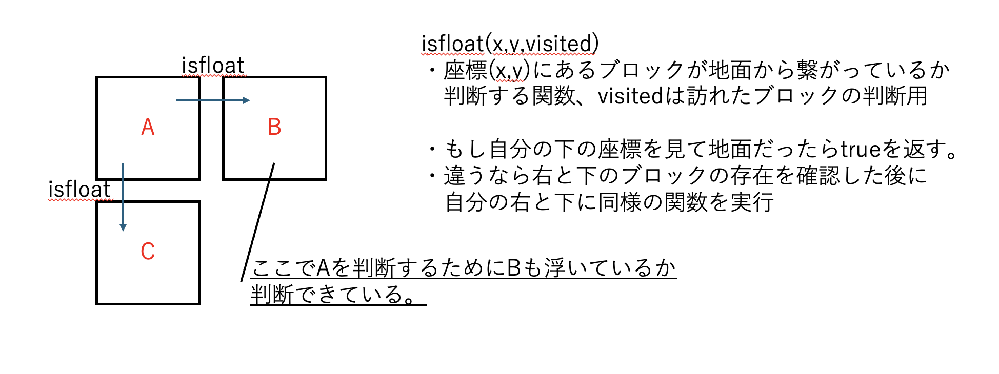

企画開発部、2025年春みんげーチーム開発で開発したゲームです。
テトリスのような見た目ですが特徴的なのは"形を作る"ことで相手に攻撃を行う点です。
ブロックには4色の色があり、同じ色で星型や数字の1の形などを作ることで相手に攻撃します。消す色によっても効果が異なり、青色なら相手に妨害、緑色なら自分のHPを回復します。
ブロックを消しあって先に相手のHPを削り切った方の勝利となります。
こちらの作品が収録されているのは2025 Summerになります
公式サイトはこちらC++ / Siv3D
"一応"プログラマーとして初めてUnityのプロジェクトに参加。
本当の初心者でオブジェクト指向すら知らない状態で参加しました。めちゃくちゃ大変だったのを覚えています。後に大学の授業でオブジェクト指向をやった時とても感動しました。
主に担当したのはブロックの落下処理です。それ以外も多少触れましたが当時初心者すぎて何を担当したか覚えていません。
ブロックの落下処理を行う際に、総当たりで処理していると処理時間が長くなってしまうので"ダイナミックプログラミング"を使用して計算量を減らそうとした。
以下の図のように設計し、訪れたブロックをbool型配列で保存し時間を短縮しようと試みた。

bool BaseGame::isfloat(int32 i, int32 j,Grid& visited) {//area[i][j]
if (i == area.height() - 1) {
return false;
}
visited[i][j] = true;
if ((i < area.height() - 1) && (area[i + 1][j] != nullptr)) {
if (visited[i + 1][j] != true) {
return isfloat(i + 1, j, visited);
}
}
if ((j > 0) && (area[i][j - 1] != nullptr)) {
if (visited[i][j - 1] != true) {
return isfloat(i, j - 1, visited);
}
}
if ((j < area.width() - 1) && (area[i][j + 1] != nullptr)) {
if (visited[i][j + 1] != true) {
return isfloat(i, j + 1, visited);
}
}
return true;
}
実際にこの設計によって以下のメリットを得られました。
あらゆるすべてに苦労しました。クラスという概念すら知らずに挑んだので大変でした。
技術として得られたことは私が未熟だったこともあり、ほとんど得られませんでした。
しかし、ゲームを作るという経験。「自分の書いたコード」が動いているのを見たことで"楽しい"と感じました。
この経験が私を"ゲーム"という分野に引き込みました。